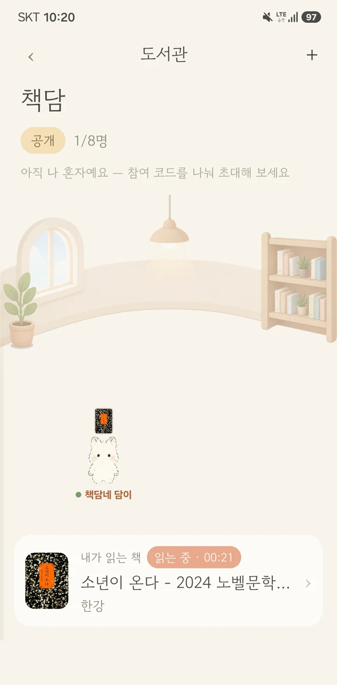

담이와 함께하는 독서 앱
오늘 읽은 책,
담이랑 얘기해요
책장을 찍어 좋아하는 문장을 간직하고, 그 문장이 왜 좋았는지 담이에게 들려주세요.
“어느 대목에서
그 인물이 좋아졌어?”
책담에서 이렇게 읽어요
-
01
도서관에서 함께 읽기

타이머로 읽은 시간을 기록해요. 같은 방 사람들이 읽는 책도 볼 수 있어요.
-
02
마음에 남은 문장 담기
문장 선택 예시 책을 덮고 창가에 앉았다.
한 문장이 자꾸만
마음에 남았다.
나는 그 장을 다시 펼쳤다.책장을 찍고 원하는 문장을 손가락으로 훑으면 내 서재에 남아요.
-
03
담이와 이야기 이어가기
담이에게 마음에 걸린 장면을 이야기해요. 같은 책을 열면 대화를 이어갈 수 있어요.